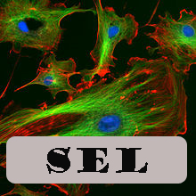
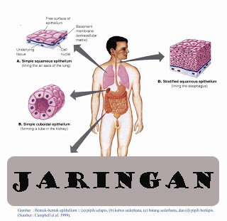

| Apa itu Biologi |
|  |  | |
Objek biologi adalah kehidupan pada berbagai tingkat struktur, mulai dari molekul yang objeknya berupa struktur dan fungsi molekul-molekul penyusun komponen sel seperti DNA, karbohidrat, protein, dll; sel yang objek kajiannya berupa struktur dan fungsi sel serta proses yang terjadi pada sel; jaringan objek kajiannya adalah diagnosis dan penanggulangan penyakit pada tanaman, hewan, dan manusia; organ adalah berbagai jaringan berbeda yang menjalankan fungsi tertentu; sistem organ adalah kumpulan organ-organ yang saling bekerjasama membentuk sebuah sistem; individu; populasi; komunitas; ekosistem; sampai bioma yang merupakan sekelompok hewan dan tumbuhan yang tinggal di suatu lokasi geografis tertentu.
Biologi sangat bermanfaat baik dalam bidang pertanian dalam usaha peningkatan produksi pangan, bidang peternakan dalam usaha peningkatan produksi hewan-hewan ternak, bidang kedokteran supaya semakin banyak penyakit yang bisa diobati, maupun dalam bidang industri seperti pengguaan mikroorganisme dalam makanan dan obat-obatan.
Penelitian dilakukan dengan cara kerja ilmiah, yaitu dengan metode ilmiah yang disertai sikap ilmiah. Adapun metode ilmiah adalah sebagai berikut:
Berikut adalah sikap-sikap ilmiah yang harus dilakukan dalam penelitian:
Setelah melakukan penelitian dengan metode ilmiah, hasil penelitian tersebut kemudian disusun dalam bentuk laporan ilmiah. Adapun isi dari laporan ilmiah tersebut adalah: